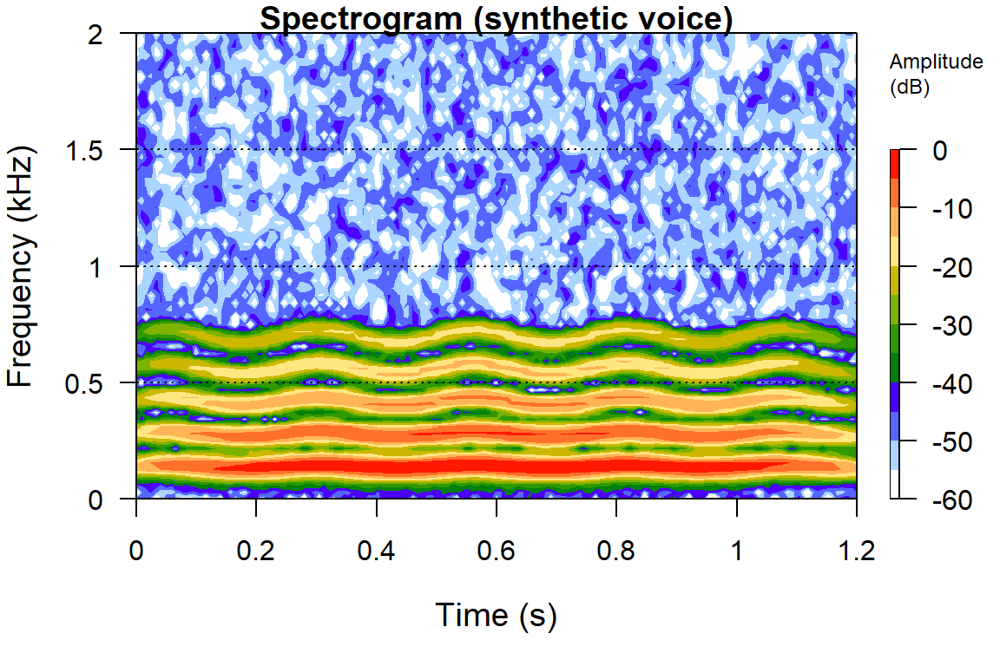
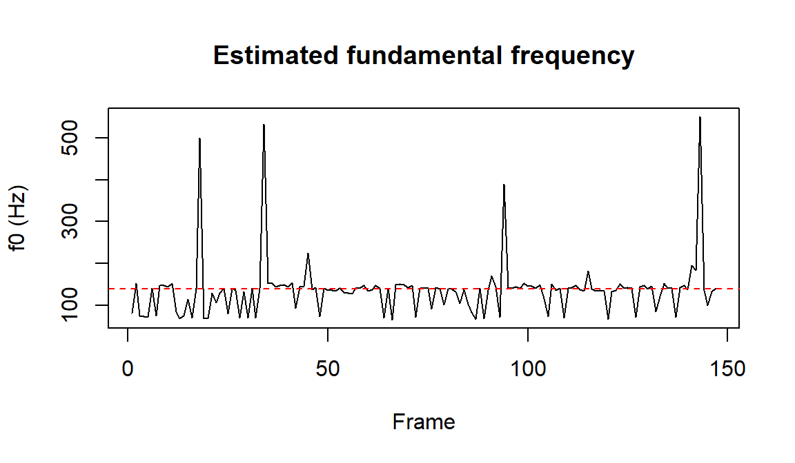

flowchart LR R["Raw audio<br/>(waveform)"] R --> A["Automatic speech<br/>recognition"] A --> T["Transcript<br/>lexical channel:<br/>what is said"] T --> TP["Text-as-data<br/>pipeline"] R --> AC["Acoustic-prosodic<br/>feature extraction"] AC --> PL["Paralinguistic channel:<br/>how it is said"] TP --> J["Joint model"] PL --> J J --> M["Marketing outcome<br/>(churn, satisfaction, conversion)"]
50 Audio, Voice, and Speech
Marketing has a soundtrack. A call-center recording, a podcast ad read, a voice-assistant exchange, a thirty-second spot scored to a swelling string line, the timbre of a spokesperson’s voice: each is an acoustic artifact that carries information about what a person said and, just as importantly, how they said it. For most of the discipline’s history that information was inaccessible at scale. Audio could be played back and judged by a human coder, but it could not be turned into the kind of numbers that enter a demand system, a choice model, or a regression. What has changed is that a waveform can now be transcribed, characterized, and embedded automatically across millions of recordings, so the acoustic layer of marketing becomes data in the same operational sense that text (Chapter 47) and images (Chapter 49) already are.
The intellectual move is the one this part has made repeatedly. An unstructured artifact, here a one-dimensional pressure signal sampled in time, is mapped into a feature vector that a marketing theory can speak about. As with text and images, the representation is lossy and learned, and the central econometric caution carries over without modification: an acoustic feature is a generated regressor whose measurement error can correlate with the outcome it is meant to explain, so a naive regression confounds measurement with effect. Audio adds one distinctive opportunity, which organizes much of this chapter. A spoken utterance has two separable channels: the lexical channel (the words, recoverable by transcription and then handed to the entire text-as-data pipeline) and the paralinguistic channel (pitch, loudness, rhythm, voice quality, the acoustic carrier of emotion and emphasis). The distinction between what is said and how it is said is the payoff of treating audio as its own modality rather than as a noisy path to a transcript.
The chapter proceeds from signal to construct to application. It first surveys where audio enters marketing. It then fixes what a digital sound is and develops the classic acoustic features that have powered speech and music analysis for decades, with a runnable demonstration that synthesizes a voice-like waveform and extracts a spectrogram, mel-frequency cepstral coefficients, a fundamental frequency contour, and a spectral centroid from it. With those primitives in hand it turns to automatic speech recognition and speech analytics, to vocal emotion and prosody, and to music and sonic branding. It closes with the realities of production practice and a short look at the frontier.
50.1 Where Audio Enters Marketing
Audio reaches marketing through several distinct streams, each with its own data characteristics and its own measurement question.
The largest and least exploited stream is the service and sales voice channel. Contact centers and outbound sales organizations record enormous volumes of calls, historically for compliance and quality assurance, and these recordings hold both a transcript and an acoustic signal. The transcript answers what was discussed: the reason for the call, the objections raised, whether a resolution or a sale occurred. The acoustic signal answers how the exchange unfolded: whether the customer’s voice tightened with frustration, whether the agent’s pace and warmth tracked or diverged from the customer’s, where in the call the emotional tenor turned. Vocal-tone analytics on this channel promises to predict churn, satisfaction, conversion, and agent effectiveness from signals a transcript cannot see. This is the channel the unstructured-data program was built to exploit (Balducci and Marinova 2018), and it is the explicit subject of Balducci et al. (2025), whose guide to understanding customer–firm conversations walks through the full path from raw call audio to validated measures—segmentation, transcription, speaker diarization, acoustic-prosodic feature extraction, and the joint modeling of the lexical and paralinguistic channels—and is the natural methodological anchor for this chapter. Even so, a clean top-tier marketing study analyzing raw call-center acoustic features at scale with a verifiable identification strategy remains comparatively rare, which is precisely why the channel is a first-class opportunity. That voice carries economically consequential signal is already established outside marketing: Mayew and Venkatachalam (2012) show that vocal markers of managerial affect on earnings calls predict future firm performance, and Hobson, Mayew, and Venkatachalam (2012) detect financial misreporting from acoustic cues of cognitive dissonance in executive speech—evidence that the paralinguistic channel encodes information markets pay to recover.
A second stream is voice-assistant and voice-commerce interaction. Smart speakers and phone assistants (Alexa, Siri, Google Assistant) turn shopping, search, and brand contact into spoken dialogue, which raises questions both about the consumer’s relationship with the device and about the persuasive properties of the assistant’s synthesized voice. Schweitzer, Belk, Jordan, and Ortner (2019, Journal of Marketing Management, doi:10.1080/0267257X.2019.1596970) frame the consumer side: users build relationships with voice-controlled devices that range from treating the device as a servant to treating it as a friend or even a master, and that relational frame shapes adoption and reliance. On the persuasion side, Flavián, Akdim, and Casaló (2023, Psychology & Marketing, doi:10.1002/mar.21765) show experimentally that voice-based recommendations from a virtual assistant can move consumer behavior more than text-based online reviews, with credibility and usefulness mediating the effect. Voice commerce makes the acoustic properties of a machine’s voice a marketing-mix variable. Adoption of in-home assistants is governed by perceived usefulness, enjoyment, and social presence (McLean and Osei-Frimpong 2019), and sustained use feeds back into brand engagement (McLean, Osei-Frimpong, and Barhorst 2021); the services-marketing agenda these devices open—from the convenience calculus of voice shopping to the design of an assistant’s persona—is mapped by Klaus and Zaichkowsky (2020) and Klaus and Zaichkowsky (2022). The frontier is affective and strategic: Mari, Mandelli, and Algesheimer (2024) find that prosodically empathic assistants lift consumer responses in voice commerce, while Mari, Mandelli, and Algesheimer (2025) document an efficiency–autonomy trade-off when consumers delegate shopping to a voice agent. And because the recommendation now issues from a machine, the “word-of-machine” effect applies directly: consumers weight human versus algorithmic recommenders differently for utilitarian versus hedonic goals (Longoni and Cian 2022), a contingency every voice-commerce deployment inherits.
A third stream is advertising and branded audio: radio and television ad audio, podcast host-read and programmatic insertions, and the music and sound design of spots across media. Here the questions are classic advertising questions (recall, attitude, persuasion) asked of an acoustic stimulus, and the literature on music in advertising, reviewed below, is the oldest and most developed thread in the modality.
A fourth stream is sonic branding: the deliberate design of a brand’s auditory identity, from the multi-second sound logo (the Intel chime, the Netflix “ta-dum,” a startup tone) to the chosen voice of a brand’s spokes-character or assistant. Sonic branding treats sound the way visual branding treats a logo or color palette, as a recognizable, ownable, affect-laden asset.
Across all four streams the same architecture recurs and is worth adopting as a default. Run automatic speech recognition to obtain a transcript and feed it to the text pipeline; separately extract acoustic-prosodic features as their own signal; and model the two channels jointly, never collapsing how-it-was-said into what-was-said. The remainder of the chapter equips each half of that architecture, whose shape Figure 50.1 traces from a single recording to a marketing outcome.
50.2 What a Sound Is, and Its Classic Features
Formally, a digital audio signal is a function of time sampled on a uniform grid. A continuous sound pressure wave \(x(t)\) is recorded as a sequence
\[ x[n] = x(n / f_s), \qquad n = 0, 1, \dots, N-1, \tag{50.1}\]
where \(f_s\) is the sampling rate in samples per second (hertz) and the number of samples \(N = f_s \cdot T\) for a recording of duration \(T\). The Nyquist-Shannon sampling theorem requires \(f_s\) to be at least twice the highest frequency of interest, which is why telephone speech is adequately captured at 8 kHz (human speech intelligibility lives mostly below 4 kHz) while music is sampled at 44.1 kHz to preserve content up to roughly 22 kHz. Each sample \(x[n]\) is a single amplitude value, the analogue of a pixel, and like a pixel it is almost meaningless in isolation. What carries information is structure across many samples: periodicity, spectral content, and how both evolve in time.
Because the informative structure is spectral and time-varying, the raw waveform is almost never modeled directly. The foundational transform is the short-time Fourier transform, which slides a short analysis window across the signal and computes, in each window, the distribution of energy across frequency. The squared magnitude of this transform, displayed as time on the horizontal axis, frequency on the vertical, and energy as intensity, is the spectrogram, the single most important visualization in audio analysis. A spectrogram of speech reveals the horizontal bands of energy (formants) that distinguish vowels, the broadband bursts of consonants, and the vertical striations of the glottal pulse train whose spacing encodes pitch.
From the spectrogram, a small set of classic features has organized speech and music analysis for four decades.
The fundamental frequency \(f_0\) is the rate at which the vocal folds vibrate, the acoustic correlate of perceived pitch. Its average level, its range, and the shape of its contour over an utterance carry speaker identity, emphasis, question-versus statement intonation, and a large share of vocal emotion.
Mel-frequency cepstral coefficients (MFCCs) are the workhorse representation of the spectral envelope, that is, of the overall shape of the spectrum that distinguishes one vowel or timbre from another independent of pitch. MFCCs were introduced by Davis and Mermelstein (1980, IEEE Transactions on Acoustics, Speech, and Signal Processing, doi:10.1109/TASSP.1980.1163420) and remain ubiquitous. They are computed by warping the spectrum onto the perceptual mel scale (which spaces frequencies the way the human ear resolves them, finely at low frequencies and coarsely at high), taking logarithms of the energy in a bank of mel filters, and applying a discrete cosine transform to decorrelate the result. The first dozen or so coefficients compactly summarize timbre and are the standard input to speaker, emotion, and (historically) speech recognition.
Spectral shape features summarize the distribution of energy across frequency in a single number each. The most common is the spectral centroid, the amplitude-weighted mean frequency, which corresponds to perceived brightness: a bright, sharp voice or a cymbal has a high centroid, a dull or muffled sound a low one. Related measures include spectral spread, rolloff, and flatness.
Energy and rhythm features (the short-time energy or loudness contour, the speaking rate, the distribution of pause durations) capture intensity and timing, which carry arousal, emphasis, and conversational dynamics.
Voice-quality features (jitter, the cycle-to-cycle variability in \(f_0\); shimmer, the variability in amplitude; and the harmonics-to-noise ratio) quantify the roughness, breathiness, or strain of a voice, and are sensitive markers of stress and emotion.
Figure 50.2 groups these classic descriptors by the perceptual correlate each one carries, all of them read off the spectrogram introduced above.
flowchart TB W["Digital waveform"] --> S["Spectrogram<br/>(short-time Fourier transform)"] S --> F0["Fundamental frequency f₀"] S --> MF["MFCCs<br/>(spectral envelope)"] S --> SS["Spectral shape<br/>(centroid, rolloff)"] S --> ER["Energy and rhythm<br/>(loudness, rate, pauses)"] S --> VQ["Voice quality<br/>(jitter, shimmer, HNR)"] F0 --> C1["Pitch, intonation"] MF --> C2["Timbre"] SS --> C3["Brightness"] ER --> C4["Arousal, emphasis, pacing"] VQ --> C5["Roughness, breathiness, strain"]
These features are interpretable, cheap, and defensible, the audio analogue of the hand-engineered color and composition features of Chapter 49. They were designed by acoustic phoneticians with explicit perceptual motivation, and they remain the right tool when the construct is well understood, the sample is modest, or interpretability is paramount. Table 50.1 maps each family of acoustic features to the marketing construct it most directly measures and to a representative study, so the demonstration that follows can be read as instrumenting constructs, not merely transforming a signal.
Code
library(knitr)
af <- data.frame(
`Feature family` = c("Fundamental frequency (f0)", "MFCCs (spectral envelope)",
"Spectral shape (centroid, rolloff)", "Energy & rhythm (loudness, rate, pauses)",
"Voice quality (jitter, shimmer, HNR)"),
`Perceptual correlate` = c("Pitch, intonation", "Timbre, vowel/voice identity",
"Brightness", "Arousal, emphasis, pacing", "Roughness, breathiness, strain"),
`Marketing construct` = c("Emotion, persuasion, gender", "Speaker/emotion ID",
"Persuasiveness, affect", "Engagement, conversational dynamics",
"Stress, sincerity, emotion"),
check.names = FALSE
)
kable(af)| Feature family | Perceptual correlate | Marketing construct |
|---|---|---|
| Fundamental frequency (f0) | Pitch, intonation | Emotion, persuasion, gender |
| MFCCs (spectral envelope) | Timbre, vowel/voice identity | Speaker/emotion ID |
| Spectral shape (centroid, rolloff) | Brightness | Persuasiveness, affect |
| Energy & rhythm (loudness, rate, pauses) | Arousal, emphasis, pacing | Engagement, conversational dynamics |
| Voice quality (jitter, shimmer, HNR) | Roughness, breathiness, strain | Stress, sincerity, emotion |
The move from these hand-engineered descriptors to a reproducible measurement workflow is the subject of a small methods literature aimed squarely at business and marketing researchers. Hildebrand et al. (2020) lay the conceptual foundations of voice analytics for business research—what the acoustic channel can and cannot measure, which features to extract, and how to validate them—and Busquet, Efthymiou, and Hildebrand (2024) stress-test that pipeline “in the wild,” showing that the validity and predictive accuracy of common acoustic features depend materially on the recording device, a direct caution for any study that mixes telephone, smart-speaker, and studio audio. Crucially, this line ships usable tooling rather than prescriptions alone.
Replication resources: voice analytics
The acoustic-feature pipeline of Hildebrand et al. (2020) and Busquet, Efthymiou, and Hildebrand (2024) is released as the open R package voiceR (Busquet and Hildebrand 2023), available on CRAN, which automates batch extraction, normalization, and summary of the features in Table 50.1 and is a turnkey way to reproduce the kind of analysis the demonstration below builds by hand. For raw signal processing the maintained R packages tuneR and seewave (used below) and the Python librosa, pyAudioAnalysis, and the standardized openSMILE feature sets remain the reference toolchain.
50.2.1 A Runnable Demonstration: From Waveform to Features
The demonstration below synthesizes a short voice-like waveform with known properties and then extracts the four classic features just described, using the maintained R packages tuneR and seewave. The signal is deliberately simple and fully simulated: a glottal source modeled as a fundamental plus harmonics, with a slow vibrato so the pitch contour is non-trivial, shaped by an amplitude envelope and contaminated with a little noise. Because the construction is known, the extracted features can be checked against ground truth, which is the point of a simulation. Everything here runs on synthetic data and uses only signal-processing functions, not deep models.
Code
# ---- Synthesize a voice-like waveform with KNOWN properties ----
fs <- 16000 # sampling rate (Hz); 16 kHz is standard for speech
dur <- 1.2 # seconds
t <- seq(0, dur, by = 1 / fs) # time grid
N <- length(t)
f0_mean <- 140 # mean fundamental frequency (Hz), a low-ish voice
vibrato <- 6 * sin(2 * pi * 4 * t) # +/- 6 Hz pitch wobble at 4 Hz (a gentle vibrato)
f0_t <- f0_mean + vibrato # instantaneous f0 over time
# Instantaneous phase = 2*pi * integral of f0(t); cumulative sum approximates it.
phase <- 2 * pi * cumsum(f0_t) / fs
# A glottal-like source: fundamental + decaying harmonics (gives a vowel-ish timbre).
harm_amp <- c(1.0, 0.6, 0.35, 0.2, 0.12)
sig <- rep(0, N)
for (h in seq_along(harm_amp)) {
sig <- sig + harm_amp[h] * sin(h * phase)
}
# Amplitude envelope (fade in/out) and a little additive noise (breathiness).
env <- sin(pi * seq_len(N) / N)^0.5
sig <- env * sig + rnorm(N, 0, 0.03)
# Wrap as a normalized 16-bit mono Wave object (tuneR's core data structure).
wav <- Wave(left = sig, samp.rate = fs, bit = 16)
wav <- normalize(wav, unit = "16")
wav
#>
#> Wave Object
#> Number of Samples: 19201
#> Duration (seconds): 1.2
#> Samplingrate (Hertz): 16000
#> Channels (Mono/Stereo): Mono
#> PCM (integer format): TRUE
#> Bit (8/16/24/32/64): 16The object wav is now an ordinary Wave, the same structure tuneR would produce from reading a .wav file off disk, so every step that follows applies identically to real recordings.
Code

The spectrogram shows a stack of horizontal bands, the fundamental near 140 Hz and its harmonics above it, each rippling slightly with the 4 Hz vibrato that was built in. This is exactly the harmonic structure a sustained vowel produces.
Code
# ---- Fundamental frequency contour ----
# seewave::fund returns a matrix of (time, f0-in-kHz); we convert to Hz.
ff <- seewave::fund(wav, f = fs, wl = 512, ovlp = 75,
fmax = 600, plot = FALSE)
f0_hz <- ff[, 2] * 1000 # kHz -> Hz
f0_hz <- f0_hz[is.finite(f0_hz) & f0_hz > 0]
plot(f0_hz, type = "l", xlab = "Frame", ylab = "f0 (Hz)",
main = "Estimated fundamental frequency")
abline(h = f0_mean, col = "red", lty = 2) # the true mean we synthesized
The estimated pitch track sits close to the dashed line at the true mean of 140 Hz, recovering a property that was put into the signal by construction. In a real recording this same contour is what carries question intonation, emphasis, and much of the emotional signal developed below.
Code
# ---- Mel-frequency cepstral coefficients (timbre) ----
# tuneR::melfcc returns a matrix: one row per analysis frame, one column per coefficient.
mf <- melfcc(wav, sr = fs, numcep = 13,
wintime = 0.025, hoptime = 0.010) # 25 ms windows, 10 ms hop
cat("MFCC matrix dimensions (frames x coefficients):",
paste(dim(mf), collapse = " x "), "\n")
#> MFCC matrix dimensions (frames x coefficients): 118 x 13
# Per-utterance summary: the mean of each coefficient across frames.
# Aggregating frame-level features to a fixed-length vector is the standard way
# to turn a variable-length recording into one row of a design matrix.
mfcc_means <- round(colMeans(mf), 3)
names(mfcc_means) <- paste0("c", 0:12)
mfcc_means
#> c0 c1 c2 c3 c4 c5 c6 c7 c8 c9 c10
#> 94.973 4.071 15.124 8.855 1.362 -5.616 -8.119 -5.853 -0.553 3.384 4.121
#> c11 c12
#> 1.548 -2.113The MFCC matrix has one row per short analysis frame and thirteen columns. A recording of any length therefore yields a variable number of frames, and the last lines show the standard device for handling that: summarize the frames (here by their mean) into a single fixed-length vector that can become one row of a regression or classifier design matrix. The first coefficient c0 reflects overall log-energy; the rest encode the spectral envelope, that is, the timbre.
Code
# ---- Spectral centroid (perceived brightness) ----
# Compute the mean spectrum, then the amplitude-weighted mean frequency.
ms <- seewave::meanspec(wav, f = fs, wl = 512, plot = FALSE)
freq_khz <- ms[, 1] # frequency axis in kHz
amp <- ms[, 2] # relative amplitude
centroid_hz <- sum(freq_khz * amp) / sum(amp) * 1000
# seewave::specprop packages the same and related descriptors; 'cent' is the
# centroid in Hz. We report both to show they agree.
sp <- seewave::specprop(ms, f = fs)
round(c(centroid_manual_hz = centroid_hz,
centroid_specprop_hz = as.numeric(sp$cent)), 1)
#> centroid_manual_hz centroid_specprop_hz
#> 915.6 915.6The spectral centroid, computed both by hand as the amplitude-weighted mean frequency and via seewave::specprop, lands in the low hundreds of hertz, consistent with a low-pitched voice whose energy is concentrated in the fundamental and its first few harmonics. A brighter sound (more high-frequency energy) would push this number up. With four lines each, this demonstration has turned a one-dimensional waveform into a pitch contour, a timbre vector, and a brightness scalar, the same primitives that feed every application that follows.
50.3 Automatic Speech Recognition and Speech Analytics
The lexical channel of audio is unlocked by automatic speech recognition (ASR), the task of transcribing speech to text. ASR is the bridge that lets the entire text-as-data apparatus of Chapter 47, that is, topic models, sentiment and stance classifiers, embeddings, and large-language-model extraction, operate on spoken marketing data. The history of ASR runs from the MFCC-plus-hidden-Markov systems of the 1980s and 1990s, through hybrid deep-neural-network systems in the 2010s, to today’s end-to-end sequence models trained on very large corpora. The contemporary reference point is OpenAI’s Whisper, an encoder-decoder transformer trained on a large multilingual, multitask corpus that produces robust transcripts across accents, noise, and domains and has become a common default for research pipelines. Wav2vec 2.0 represents the parallel self-supervised line: it learns speech representations from unlabeled audio that can then be fine-tuned for recognition with relatively little labeled data. These deep-ASR systems are best treated here as conceptual building blocks rather than something to run inline: they require substantial compute and large pretrained weights, and unlike the signal-processing demonstration above they are not lightweight enough to execute in a book’s render pipeline. The practical posture is to call them as a service or a preprocessing step, then verify their output, because transcription error is a measurement error that propagates into every downstream text feature.
Several capabilities sit alongside transcription and together constitute speech analytics. Speaker diarization segments a recording into “who spoke when,” essential for separating the agent from the customer in a service call or the host from the guest in a podcast. Speaker identification and verification match a voice to a known identity, underpinning voice biometrics and fraud detection. Keyword and intent spotting flags compliance-relevant phrases, product mentions, or competitor references without a full transcript. Language and accent identification route and segment multilingual corpora. In a production speech- analytics stack these run before or alongside ASR, and their errors, like ASR’s, are generated-feature errors that the downstream analysis must respect.
The strategic value of the lexical channel in marketing is that it converts the spoken word, previously locked in un-searchable audio, into the same representations that have made review text and social-media text so productive. A corpus of sales-call transcripts can be mined for the objections that precede a lost deal, the language that precedes a renewal, or the product features customers actually ask about, exactly as a corpus of reviews is mined for product attributes. And the style of the transcribed words, not only their content, carries outcome-relevant signal: Packard and Berger (2021) show that the concreteness of frontline-employee language raises customer satisfaction and purchase, recovered from the lexical channel of service interactions, while Melumad, Inman, and Pham (2019) show that the device a message is composed on systematically shifts its emotionality, a reminder that the transcript’s linguistic features are themselves shaped by the capture context. But transcription alone discards the paralinguistic channel, and that channel is where audio earns its place as a distinct modality.
50.4 Vocal Emotion and Prosody: How It Is Said
The acoustic-prosodic channel carries information that the words do not. The same sentence, “that’s just great,” can be sincere or sarcastic (Chapter 48), and the difference lives almost entirely in pitch, timing, and voice quality rather than in the lexical content. Prosody, the melody and rhythm of speech, comprises the \(f_0\) contour, the loudness contour, speaking rate and pausing, and voice quality. These are the features the demonstration above extracted, and they are the substrate of vocal emotion.
The scientific anchor is Scherer (2003, Speech Communication, doi:10.1016/S0167-6393(02)00084-5), whose review of vocal emotion communication lays out both the production side (how emotions systematically modulate acoustic parameters: anger raises and broadens pitch and energy, sadness lowers and narrows them, and so on) and the recognition side (how listeners decode those parameters). This is the theory that licenses treating acoustic features as measures of an emotional construct rather than as arbitrary numbers. On the engineering side, speech emotion recognition (SER) builds classifiers that map acoustic features to emotion labels. El Ayadi, Kamel, and Karray (2011, Pattern Recognition, doi:10.1016/j.patcog.2010.09.020) survey the classic pipeline (hand-engineered prosodic, spectral, and voice-quality features feeding a classifier) and the recurring difficulties: emotion is continuous and context-dependent, labeled datasets are small and often acted rather than spontaneous, and accuracy degrades sharply when a model trained on one corpus or language meets another. Modern SER replaces or augments the hand-engineered features with learned audio embeddings of the wav2vec family, but the validity problems the survey names (label quality, acted-versus-spontaneous mismatch, cross-corpus generalization) are exactly the construct-validity concerns (Chapter 3) that this book insists on, and they do not disappear when the feature extractor becomes a neural network.
That comparison has now been run head-to-head, and on a construct other than emotion. Shen et al. (2026) ask whether vocal delivery reveals a respondent’s uncertainty about the answer they are giving—a quantity that matters because it governs how much bias a piece of customer feedback carries, and one that existing marketing measures capture poorly since they were built for selected-response surveys. They pit two methods against each other: one that learns from the raw audio, and one built on a single interpretable voice feature, pitch. Evaluated in a laboratory net-promoter-score study and then in a field NPS study with a full-service music-store chain, the voice-feature approach outperforms the raw-audio approach on the marketing tasks, and does so while preserving privacy—a pitch summary does not carry the speaker’s identity the way a raw waveform or a speaker-discriminative embedding does (Chapter 27). The firm’s own use cases were targeting coupon offers at customers whose vocal hesitance predicted redemption, and picking out brand ambassadors whose testimonials would persuade.
Read against Section 69.5.1, this is a useful corrective to the assumption that a learned representation dominates a hand-engineered feature whenever enough audio is available. Here the theoretically motivated scalar wins on predictive performance and on privacy and on interpretability at once, which is not the trade-off the usual framing anticipates. The reason is the one Scherer’s production account supplies: when a construct has a known acoustic signature, a feature chosen to match it starts from a strong prior, whereas a general-purpose embedding must find that signal in a space built for speaker and phoneme discrimination and will happily fit whatever else in the recording correlates with the label. The lesson is not that embeddings lose, but that “raw audio plus a big model” is a hypothesis about where the information lives, and it is testable against a named feature rather than assumed superior to one.
Prosody also carries persuasion, not only emotion. Zoghaib (2019, Recherche et Applications en Marketing, doi:10.1177/2051570719828687) manipulates a speaker’s voice along acoustic dimensions and finds that lower-pitched, smoother (less rough), and duller (less bright) voices are the more persuasive, with effects that interact with speaker gender. This is a direct demonstration that the very features the demonstration computed, \(f_0\) level and spectral centroid and voice-quality roughness, are not bookkeeping quantities but marketing-relevant levers that shape consumer response to the same words. The managerial reading is that a brand choosing a spokesperson, a voice actor for an ad, or a timbre for a synthesized assistant is choosing a persuasion parameter, and that choice can now be measured acoustically rather than left to intuition.
Prosody is also dynamic, and treating it as a fixed speaker trait discards most of what it carries. Balducci, Marinova, and Singh (2026) analyze 783 B2B prospecting calls (11,566 speaking turns) with vocal intensity, speech rate, and pitch entered as paralinguistic acts alongside what the salesperson said, mediated by a turn-level measure of the lead’s receptivity. The interactions with position in the call are the point: speaking faster is roughly neutral early in a conversation and reduces receptivity by 8.26% later in the same one. The same acoustic feature, computed the same way, therefore has no single effect to estimate—only an effect conditional on when in the episode it occurs. For feature engineering this argues against the per-utterance summary the demonstration above produced (a mean of each coefficient across frames) as the default aggregation for conversational audio: collapsing a call to one vector is exactly the operation that averages an early gain against a late penalty. Keep the turn as the row, and let position in the conversation be a covariate rather than something integrated out.
The discipline’s standing caution applies with force here. Acoustic-emotion features are generated regressors, and the model that generates them was trained on data whose emotional labels, speaker demographics, and recording conditions may differ systematically from the marketing setting of interest. A vocal-frustration score that is more accurate for some accents than others, or for studio audio than for telephone audio, injects a bias that can correlate with the outcome. The remedy is the one used throughout this part: validate the generated feature against human judgment on a held-out sample from the target domain before trusting it in a downstream model.
50.4.1 Sounding Like the Listener: Vocal Similarity
The prosody results treat a voice as persuasive or not in itself. Hyun, Lowe, and Krishna (2026) ask a relational question instead: does a spokesperson persuade more when their voice sounds like the listener’s? The construct is vocal similarity in timbre, and the measurement is objective. Each voice is represented by its MFCC timbre profile, the same per-utterance vector the demonstration above built, and similarity is closeness between two such representations, estimated with a machine-learning model. We could not access the full text, so this account rests on the published abstract and the university’s news release (Glass 2026); design details beyond those sources are not described here.
The paper tests the idea with two field designs that define “the listener” differently.
- Dyadic. On Shark Tank, entrepreneurs pitch to a panel of investors, which yields 7,002 entrepreneur–investor combinations across 14 seasons (the season count is from the release). Similarity is computed for each pair, and the abstract reports that it raises persuasion in these investment pitches.
- Audience average. A Kickstarter campaign video speaks to a large, anonymous audience, so there is no single listener to match. For 2,091 campaigns, the comparison is between the spokesperson’s voice and the audience’s average voice, and campaigns whose spokesperson sounds closer to that average raise more money and succeed more often.
The two designs are worth more together than either alone. Closeness to an average voice is also a measure of how typical a voice is, and averaging voices makes them sound more attractive (Bruckert et al. 2010), so the Kickstarter result on its own could be a “typical voices are pleasant” effect rather than a similarity effect. The dyadic design is the one that can separate the two, because the same presentation, with the same words, product, and entrepreneur, meets several investors whose voices differ. Comparing investors within a pitch holds the entrepreneur’s general vocal appeal fixed. Whether the paper’s models exploit that within-pitch variation is not something we can confirm from the abstract, and it is the first thing to check in the full text.
Two further results tie the effect to a mechanism. It weakens when external credibility signals are available, which is what one would expect if similarity is a cue people fall back on when other evidence about the speaker is scarce. And in four lab studies, similarity raises trust in the speaker’s competence, which carries the effect on persuasion. The lab studies also validate the measure: objective (acoustic) and subjective (rated) similarity behave alike, and the objective measure maps onto the subjective one, the convergent-validity check Chapter 3 asks of any generated variable. The broader similarity literature suggests a boundary condition to look for. In a meta-analysis of 313 studies, actual similarity predicted attraction in no-interaction and short-interaction settings but not in existing relationships, where perceived similarity carried the effect (Montoya, Horton, and Kirchner 2008). A pitch and a campaign video are exactly the short-exposure settings where actual similarity matters, so whether vocal similarity still persuades a listener after repeated contact is an open question.
The managerial and ethical edge is sharp. According to the release, under ten seconds of audio are enough to characterize a voice, and voice cloning makes it cheap to synthesize a spokesperson, or an AI salesperson, tuned to sound like each customer, a capability that scammers can use as easily as brands. Because the mechanism runs through trust in competence, a matched voice manufactures a competence cue that nothing about the seller has earned. A voice is also biometric data, so tuning a synthetic voice to a customer’s own voice brings in the consent and retention questions of Chapter 27.
Before borrowing the measure, notice how many choices hide inside “distance between MFCC representations.” The sketch below scores four simulated speakers, plus one of them re-recorded with a louder microphone, against a simulated audience and a single listener.
Code
# Vocal similarity from mean-MFCC vectors: simulated voices, base R only.
set.seed(2026)
k <- 13 # c0 (log-energy) + c1..c12 (timbre)
mu <- c(60, seq(8, -3, length.out = 12)) # spectral tilt shared by all voices
sdv <- c(8, seq(4, 1, length.out = 12)) # low-order coefficients vary more
draw <- function(n) matrix(rnorm(n * k, rep(mu, each = n), rep(sdv, each = n)), n, k)
audience <- draw(400) # one mean-MFCC vector per listener
speakers <- draw(4)
rownames(speakers) <- c("A", "B", "C", "D")
# Speaker A re-recorded with the microphone gain turned up: only c0 moves.
speakers <- rbind(speakers, "A, louder mic" = speakers["A", ] + c(12, rep(0, 12)))
investor <- draw(1)[1, ] # a single listener (dyadic design)
# Measurement choices: drop c0, standardize each coefficient by the audience SD.
timbre <- 2:k
z <- function(x) sweep(sweep(x[, timbre, drop = FALSE], 2, colMeans(audience[, timbre])),
2, apply(audience[, timbre], 2, sd), "/")
avg_voice <- colMeans(audience) # the "average voice"
euc <- function(a, b) sqrt(sum((a - b)^2))
cosine <- function(a, b) sum(a * b) / sqrt(sum(a^2) * sum(b^2))
zs <- z(speakers); zi <- z(rbind(investor))[1, ]
round(data.frame(
raw_dist_avg = apply(speakers, 1, euc, b = avg_voice), # all 13, unscaled
timbre_dist_avg = apply(zs, 1, function(s) euc(s, rep(0, length(timbre)))),
raw_cosine_avg = apply(speakers[, timbre], 1, cosine, b = avg_voice[timbre]),
dyadic_cosine = apply(zs, 1, cosine, b = zi)
), 3)
#> raw_dist_avg timbre_dist_avg raw_cosine_avg dyadic_cosine
#> A 12.982 3.805 0.857 -0.522
#> B 18.658 4.050 0.768 -0.237
#> C 10.579 3.785 0.755 -0.149
#> D 16.393 3.294 0.835 0.330
#> A, louder mic 8.938 3.805 0.857 -0.522Three lessons come out of the table. First, the energy coefficient c0 records loudness and microphone gain, not timbre: re-recording speaker A louder moves the raw distance to the average voice from about 13.0 to 8.9 and makes A look like a different speaker, while the timbre distance (c0 dropped, coefficients standardized) does not change. Second, defensible measures disagree. The raw distance ranks C closest to the average voice, the standardized timbre distance ranks D, and the raw cosine ranks A, so the ranking a study reports depends on choices that belong in its methods section. Third, the standardized distances all sit near \(\sqrt{12} \approx 3.5\), because in twelve dimensions most voices are about equally far from the mean, so similarity to an average voice varies within a narrow band and small measurement artifacts can move a speaker’s rank. The dyadic column, in contrast, uses cosine on centered vectors, which asks whether two voices deviate from the average in the same direction, a different notion of “sounding alike” than closeness to the mean.
50.5 Music and Sonic Branding
Music is the oldest and most developed thread in audio-as-marketing, and the research is unusually clear that music in advertising is not decoration but a processing variable. Hecker (1984, Psychology & Marketing, doi:10.1002/mar.4220010303) gives the early statement of music’s role in advertising effect. The empirical core comes from a sequence of careful studies. Milliman (1982, Journal of Marketing, doi:10.1177/002224298204600313) shows in a field setting that the tempo of background music changes the pace at which supermarket shoppers move and, with it, sales volume: slow music slows shoppers and raises spending. North, Hargreaves, and McKendrick (1999, Journal of Applied Psychology, doi:10.1037/0021-9010.84.2.271) demonstrate that the style of in-store music biases product choice, with French music lifting French wine sales and German music lifting German wine sales, an effect operating largely outside shoppers’ awareness. For advertising specifically, Kellaris and Cox (1989, Journal of Consumer Research, doi:10.1086/209199) reassess earlier claims about background music and persuasion, and Kellaris, Cox, and Cox (1993, Journal of Marketing, doi:10.1177/002224299305700409) provide the contingency account that organizes the field: music helps message reception when its attention-gaining properties and its congruency with the message work together, and can hurt when they conflict. The lesson is that music’s effect is moderated by fit, not uniformly positive, which is exactly why measuring musical content matters.
Measuring that content is the province of music information retrieval (MIR), which extracts tempo and beat, key and mode (major versus minor, a strong correlate of happy versus sad), timbre via the same MFCCs used for speech, and learned embeddings of valence and arousal. These features let a researcher characterize the music in thousands of ads or podcast segments and relate it to recall, attitude, and sales at a scale the classic studies could not reach. The bridge from the classic effects literature to MIR-based measurement at scale is one of the more tractable open opportunities in the modality.
Sonic branding extends music’s logic from the spot to the brand. Zoghaib, Luffarelli, and Feiereisen (2023, Psychology & Marketing, doi:10.1002/mar.21875) show that structural properties of a brand’s music, an irregular melodic contour and an unstable tonality, raise perceived brand innovativeness and brand evaluations, with processing difficulty as the mechanism. This connects sonic branding to the same aesthetic-complexity logic that governs visual branding in Chapter 49: a moderate, productive difficulty in processing a stimulus can enhance rather than diminish response. The sound logo, the brand voice, and the scoring of a brand’s content are, on this evidence, designable assets whose acoustic properties carry measurable equity.
50.6 Industry and Production Practice
Bringing audio analysis into a working marketing organization confronts a set of realities the academic framing can understate.
The first is data access and consent. Call recordings, voice-assistant logs, and any audio containing identifiable voices are sensitive personal data. The human voice is a biometric identifier, and many jurisdictions regulate it specifically; two-party-consent recording laws, the need for a lawful basis to process voice data, and rules on automated decision-making all constrain what can be collected and modeled. The privacy and governance considerations of Chapter 27 are not an afterthought for audio but a precondition for it, and they shape the dataset before any feature is extracted.
The second is audio quality and channel effects. Telephone audio is band-limited to roughly 300 to 3400 Hz and compressed by lossy codecs; far-field smart-speaker audio carries room reverberation and background noise; podcast audio is studio-clean but heavily processed. These channel differences alter the very features a model relies on, so a pitch or emotion model trained on one channel can fail on another. Robust practice fixes the sampling rate and channel, applies consistent preprocessing (resampling, normalization, optional noise reduction), and validates within the channel of deployment.
The third is the pipeline architecture that the chapter has advocated throughout, now stated as engineering. A production system typically runs voice-activity detection to find speech, diarization to separate speakers, ASR to transcribe, and a parallel acoustic-feature extractor for prosody and emotion, then fuses the lexical and paralinguistic streams for the downstream task. Each stage is a model with its own error rate, and those errors compound, so monitoring and human spot- checking at each stage are not optional. Figure 50.3 sets out these stages in sequence, each a model whose error feeds the next.
flowchart LR VAD["Voice-activity<br/>detection"] --> DIA["Speaker<br/>diarization"] DIA --> ASR["ASR<br/>(transcribe)"] DIA --> AFE["Acoustic-feature<br/>extractor (prosody, emotion)"] ASR --> LEX["Lexical stream"] AFE --> PAR["Paralinguistic stream"] LEX --> FUS["Fusion"] PAR --> FUS FUS --> DWN["Downstream task"]
The fourth is build-versus-buy. A mature ecosystem of commercial speech-to-text, diarization, and emotion APIs (from the major cloud providers and specialized vendors) makes it unnecessary to train ASR from scratch, while open-source models (Whisper, wav2vec 2.0) and toolkits (librosa and pyAudioAnalysis in Python, openSMILE for standardized acoustic feature sets, and tuneR and seewave in R for the signal-processing primitives demonstrated above) make a transparent, auditable in-house pipeline feasible. The choice turns on data sensitivity (a regulated voice corpus may not leave the premises), the need for auditability in a research setting, and cost at scale. For the construct-validity reasons this book stresses, a research pipeline benefits from the transparency of open tooling even when a commercial API would be more accurate out of the box.
50.7 Frontier and Expansion
Audio is the youngest of the well-developed marketing data modalities, and several frontiers are visible. The first is self-supervised audio foundation models. Just as wav2vec 2.0 learns speech representations from unlabeled audio and Whisper learns robust transcription from weak supervision at scale, general-purpose audio embeddings increasingly provide a single representation that supports emotion, speaker, and content tasks with light fine-tuning, lowering the barrier to acoustic measurement in marketing much as pretrained image and text models did for those modalities. The second is multimodal fusion, the natural endpoint of this part: a podcast ad, a TikTok video (Chapter 47 and the image and video threads), or a live-commerce stream is simultaneously audio, speech, on-screen text, and image, and the acoustic features developed here are one stream to be fused with the others rather than analyzed alone. The third is generative and synthetic voice: text-to-speech has become good enough that brands synthesize spokesperson voices and personalize audio at scale, which turns voice from a measured variable into a designed one and raises fresh questions of authenticity, disclosure, and consumer trust. The fourth is the still-open call-analytics opportunity flagged at the start: the service and sales voice channel remains comparatively under-studied in top-tier marketing research, and a credible identification strategy applied to acoustic call features at scale is among the clearer contributions the modality invites.
The synthesizing survey of machine learning and AI in marketing by Ma and Sun (2020, International Journal of Research in Marketing, doi:10.1016/j.ijresmar.2020.04.005) situates audio within the broader move to connect computational representations of unstructured data to human marketing insight, and it is the right place to read this chapter’s modality back into the whole. The consistent thread, from the MFCCs of 1980 to the foundation models of today, is the one this part repeats for every modality: a sound becomes a learned, lossy feature vector; that vector is a generated regressor; and the marketing payoff comes from separating what is said from how it is said, then defending both measurements before trusting either.
Balducci, Bitty, and Detelina Marinova. 2018. “Unstructured Data in Marketing.” Journal of the Academy of Marketing Science 46 (4): 557–90. https://doi.org/10.1007/s11747-018-0581-x.
Balducci, Bitty, Detelina Marinova, and Jagdip Singh. 2026. “Ready to Convert? How to Talk with Sales Leads.” Journal of Marketing Research. https://doi.org/10.1177/00222437261481444.
Balducci, Bitty, Bin Pang, Lingshu Hu, Can Li, Wenbo Wang, Yi Shang, Detelina Marinova, and Matt Gordon. 2025. “Leveraging Audio Data: A Guide to Understanding Customer-Firm Conversations.” Marketing Letters 37 (1). https://doi.org/10.1007/s11002-025-09797-z.
Bruckert, Laetitia, Patricia Bestelmeyer, Marianne Latinus, Julien Rouger, Ian Charest, Guillaume A. Rousselet, Hideki Kawahara, and Pascal Belin. 2010. “Vocal Attractiveness Increases by Averaging.” Current Biology 20 (2): 116–20. https://doi.org/10.1016/j.cub.2009.11.034.
Busquet, Francesc, Fotis Efthymiou, and Christian Hildebrand. 2024. “Voice Analytics in the Wild: Validity and Predictive Accuracy of Common Audio-Recording Devices.” Behavior Research Methods 56 (3): 2114–34. https://doi.org/10.3758/s13428-023-02139-9.
Busquet, Francesc, and Christian Hildebrand. 2023. “voiceR: Voice Analytics for Social Scientists.” CRAN: Contributed Packages. https://doi.org/10.32614/cran.package.voicer.
Glass, Emily. 2026. “AI Can Clone Your Voice. Why That’s Powerful — and Dangerous.” University of Cincinnati News. https://www.uc.edu/news/articles/2026/06/ai-voice-cloning-vocal-similarity-uc-study.html.
Hildebrand, Christian, Fotis Efthymiou, Francesc Busquet, William H. Hampton, Donna L. Hoffman, and Thomas P. Novak. 2020. “Voice Analytics in Business Research: Conceptual Foundations, Acoustic Feature Extraction, and Applications.” Journal of Business Research 121: 364–74. https://doi.org/10.1016/j.jbusres.2020.09.020.
Hobson, Jessen L., William J. Mayew, and Mohan Venkatachalam. 2012. “Analyzing Speech to Detect Financial Misreporting.” Journal of Accounting Research 50 (2): 349–92. https://doi.org/10.1111/j.1475-679X.2011.00433.x.
Hyun, Na Kyong (Kimberly), Michael L. Lowe, and Aradhna Krishna. 2026. “Vocal Similarity, Timbre, and Persuasion in Consumer–Spokesperson Interactions.” Journal of Marketing Research 63 (6): 1055–73. https://doi.org/10.1177/00222437261440557.
Klaus, Phil, and Judith Lynne Zaichkowsky. 2022. “The Convenience of Shopping via Voice AI: Introducing AIDM.” Journal of Retailing and Consumer Services 65: 102490. https://doi.org/10.1016/j.jretconser.2021.102490.
Klaus, Phil, and Judy Zaichkowsky. 2020. “AI Voice Bots: A Services Marketing Research Agenda.” Journal of Services Marketing 34 (3): 389–98. https://doi.org/10.1108/jsm-01-2019-0043.
Longoni, Chiara, and Luca Cian. 2022. “Artificial Intelligence in Utilitarian Vs. Hedonic Contexts: The Word-of-Machine Effect.” Journal of Marketing 86 (1): 91–108. https://doi.org/10.1177/0022242920957347.
Mari, Alex, Andreina Mandelli, and René Algesheimer. 2024. “Empathic Voice Assistants: Enhancing Consumer Responses in Voice Commerce.” Journal of Business Research 175: 114566. https://doi.org/10.1016/j.jbusres.2024.114566.
———. 2025. “AI-Assisted Shopping on Voice Assistants: The Efficiency–Autonomy Consumer Decision Trade-Off.” Journal of Interactive Marketing. https://doi.org/10.1177/10949968251400616.
Mayew, William J., and Mohan Venkatachalam. 2012. “The Power of Voice: Managerial Affective States and Future Firm Performance.” The Journal of Finance 67 (1): 1–43. https://doi.org/10.1111/j.1540-6261.2011.01705.x.
McLean, Graeme, and Kofi Osei-Frimpong. 2019. “Hey Alexa: Examine the Variables Influencing the Use of Artificial Intelligent in-Home Voice Assistants.” Computers in Human Behavior 99: 28–37. https://doi.org/10.1016/j.chb.2019.05.009.
McLean, Graeme, Kofi Osei-Frimpong, and Jennifer Barhorst. 2021. “Alexa, Do Voice Assistants Influence Consumer Brand Engagement? Examining the Role of AI Powered Voice Assistants in Influencing Consumer Brand Engagement.” Journal of Business Research 124: 312–28. https://doi.org/10.1016/j.jbusres.2020.11.045.
Melumad, Shiri, J. Jeffrey Inman, and Michel Tuan Pham. 2019. “Selectively Emotional: How Smartphone Use Changes User-Generated Content.” Journal of Marketing Research 56 (2): 259–75. https://doi.org/10.1177/0022243718815429.
Montoya, R. Matthew, Robert S. Horton, and Jeffrey Kirchner. 2008. “Is Actual Similarity Necessary for Attraction? A Meta-Analysis of Actual and Perceived Similarity.” Journal of Social and Personal Relationships 25 (6): 889–922. https://doi.org/10.1177/0265407508096700.
Packard, Grant, and Jonah Berger. 2021. “How Concrete Language Shapes Customer Satisfaction.” Journal of Consumer Research 47 (5): 787–806. https://doi.org/10.1093/jcr/ucaa038.
Shen, Tongyao, Hye-Jin Kim, Jehoshua Eliashberg, and Min Ding. 2026. “Amplifying Insights: Harnessing Voice Technology to Decode Customer Uncertainty in Marketing.” Journal of Marketing. https://doi.org/10.1177/00222429261484107.